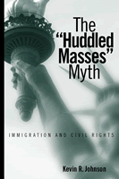

The disconnect between national rhetoric, the law, and public policy
The disconnect between national rhetoric, the law, and public policy


 The disconnect between national rhetoric, the law, and public policy
The disconnect between national rhetoric, the law, and public policy

|  |
The "Huddled Masses" MythImmigration and Civil RightsKevin R. Johnsonpaper EAN: 978-1-59213-206-5 (ISBN: 1-59213-206-5) |
"In this compelling book, Kevin R. Johnson reveals the myth of the 'huddled masses,' turning a critical eye on the contradictions of U.S. immigration policies and practices. Whereas the U.S. proudly views itself as a nation of immigrants, many people arriving to its shores have been shunned, most notably people of color and the poor. In a post-September 11th world, Johnson gives us good reasons to renew—rather than restrict—our nations commitment to immigrants."
—Michael Welch, Rutgers University, author of Detained: Immigration Laws and the Expanding INS Jail Complex
Despite rhetoric that suggests that the United States opens its doors to virtually anyone who wants to come here, immigration has been restricted since the nation began. In this book, Kevin R. Johnson argues that immigration policy reflects the social hierarchy that prevails in American society as a whole and that immigration reform is intertwined with the struggle for civil rights.
The "Huddled Masses" Myth focuses on the exclusion of people of color, gays and lesbians, people with disabilities, the poor, political dissidents, and other disfavored groups, showing how bias shapes the law. In the nineteenth century, for example, virulent anti-Asian bias excluded would-be immigrants from China and severely restricted those from Japan. In our own time, people fleeing persecution and poverty in Haiti generally have been treated much differently from those fleeing Cuba. Johnson further argues that although domestic minorities (whether citizens or lawful immigrants) enjoy legal protections and might even be courted by politicians, they are regarded as subordinate groups and suffer discrimination. This book has particular resonance today as the public debates the uncertain status of immigrants from Arab countries and of the Muslim faith.
Excerpt available at www.temple.edu/tempress
"The 'Huddled Masses' Myth is remarkably well conceived and written. Kevin Johnson takes up consistently interesting and fundamental questions about immigration law and then covers all the bases. He mounts his claims not through rhetoric, but through careful and meticulous work. This is a first-rate book on a very timely topic, and Johnson's treatment will prove to be very important in domestic debates about immigration."
—Michael A. Olivas, William B. Bates Distinguished Chair of Law and Director, Institute for Higher Education Law and Governance, University of Houston Law Center
"Johnson's unique approach to both immigration and civil rights fills an important gap. He broadens the discussion by bringing together the discourse on race, ethnicity, immigration, and citizenship that until the last few years remained virtually isolated from each other. The 'Huddled Masses' Myth is an important contribution to moving away from a binary race paradigm and one that truly considers contemporary U.S. experience as well as challenging previous assumptions about the construction of race as black and white."
—Mary Romero, School of Social Justice, Arizona State University, and author of Maid in U.S.A.
"[I]nformative...well documented and very readable. The text presents facts, analysis, and opinion in a balanced manner without straining the reader's attention with excessive details. It is very enjoyable and highly recommended for those interested in race relations, public policy, law, or politics."
—The Hispanic Outlook in Higher Education
"[F]or those unfamiliar with the [immigration policy] field, this is an informative book. ...students can definitely benefit by reading his account."
—Ethnic and Racial Studies
"What Johnson adds to the discussion is his broad-based analysis, not only of the racialized nature of immigration law and policy, but of the connections between public discourse of 'race' and broader notions of civil rights and citizenship.
—Law & Politics Book Review
"Through the glasses of a liberal scholar trained in law, Johnson offers a perspective on the history of immigration to the United States and its relevance to the issues in the post-September 11 United States.... Johnson's study is highly polished, well argued and accessible."
—H-Net
"[The book] will be an instrumental resource for historians and other non-legal scholars of immigration. Johnson is able to explain and document the legal minutiae of various laws and administrative and court decisions that often stymie non-specialists."
—The Journal of American Ethic History
"[The book] presents a valuable analysis of U.S. treatment of immigrants."
—Affilia: Journal of Women and Social Work
"Johnson's work compels readers to question how America treats its minorities and dares America to live according to the letter and spirit of its creed."
—Perspectives on Political Science
Acknowledgments
1. Immigration and Civil Rights in the United States
2. Exclusion and Deportation of Racial Minorities
3. Exclusion and Deportation of Political Undesirables
4. Exclusion and Deportation of the Poor
5. Exclusion and Deportation of Criminals
6. The Marginalization of Women Under the Immigration and Nationality Laws
7. Exclusion and Deportation of Lesbians and Gay Men
8. The Future of Immigration and Civil Rights in the United States
Notes
Index
 | Kevin R. Johnson is Associate Dean as well as Professor of Law and Chicana/o Studies at The University of California, Davis. His book, How Did You Get to Be Mexican?: A White/Brown Man's Search for Identity was published by Temple in 1999. |
Law and Criminology
Race and Ethnicity
Political Science and Public Policy
© 2015 Temple University. All Rights Reserved. This page: http://www.temple.edu/tempress/titles/1597_reg.html.